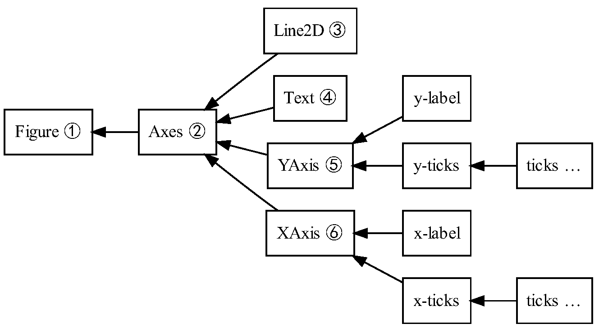

Matplotlib
1 Matplotlib简介
1.1 Matplotlib介绍
matplotlib，是matrix + plot + library的缩写。matplotlib是python的一个绘图库，与numpy、pandas共享数据科学三剑客的美誉，也是很多高级可视化库的基础。matplotlib不是python内置库，调用前需手动安装，且需依赖numpy库。
1.2 Matplotlib逻辑结构
1.2.1 绘图原理
Matplotlib绘图与生活中绘图的逻辑结构类似。我们首先都需要画布（figure），其次要对整个画布区域进行分配，指定不同区域绘图的内容，区域与Matoltlib中的坐标系（axes）等价。如果绘制2D图，会有两个坐标轴（axis），3D图则有三个坐标轴。
1.2.2 Matplotlib架构
Matplotlib的架构被地分为三层。这三层逻辑可以视为一个栈。每层逻辑知道如何与其下的一层逻辑进行通信，但在下层逻辑看来，上层是透明的。这三层从底向上分别为：后端层（Backend）、表现层（Artist）与脚本层（Scripting）。
1.2.2.1 Backend
matplotlib逻辑栈最底层是后端，它具体实现了下面的抽象接口类：
- FigureCanvas：对绘图表面（如“绘图纸”）的概念进行封装。
- Renderer：执行绘图动作（如“画笔”）。
- Event：处理键盘与鼠标事件这样的用户输入。
1.2.2.2 Artist
Artist层次结构处于matplotlib的中间层，负责很大一部分繁重的计算任务。图形中所有能看到的元素都是由Artist相应的类来实现的，Artist类型分为简单类型和容器类型两种。例如Line2D、Text等简单类型，以及Figure，Axes、Axis、Ticks等容器类型。

1.2.2.3 Scripting
为了方便快速绘图,脚本层将构建对象的过程封装在函数中，用户可通过调用这些接口函数来绘图，简化了绘图创建对象的过程。脚本层绘图函数位于matplotlib.pyplot模块中。pyplot模块的内部保存了当前图表以及当前子图等信息。
2 Matplotlib 绘图
2.1 Matplotlib 绘图接口
用matplotlib绘制可视化图表，主要有3种接口形式：
- The pyplot API
- The object-oriented API
- The pylab API
2.1.1 函数式绘图（pyplot API）
Pyplot API 是matplotlib的一个state-based交互接口，相关操作不面向特定的实例对象，而是面向"当前"图。matplotlib通过pyplot模块，完全仿照MATLAB的函数形式，提供了一套绘图接口。它将构建对象的过程封装在函数中，用户可通过调用这些接口函数一步步绘制、修改图形，简化了创建绘图对象的过程。主要用于交互式绘图和简单的程序化绘图。
2.1.2 面向对象接口（object-oriented API）
面向对象主要是指Figure和Axes两类对象。Figure提供了容纳多个Axes的画板，而Axes则是所有图标数据、图例配置等绘图形元素的容器。面向对象的绘图，就是通过调用Figure或Axes两类实例的方法完成绘图的过程。
2.1.3 pylab接口
Pylab引入了numpy和pyplot的所有接口，最初的目的是模仿matlab的工作方式，集矩阵运算与绘图于一体。因其过于庞大官方不建议使用。
2.2 绘图过程
用matplotlib绘图一般也可以分3步：
- 创建画板
- 绘制图表
- 配置图例
2.2.1 创建画板
创建画板，包括创建figure和axes对象，常用有3种方法：
- plt.figure()，主要接收一个元组作为figsize参数设置图形大小，并返回一个figure对象。
- plt.axes()，接收一个figure或在当前画板上添加一个子图，返回该axes对象，并将其设置为"当前"图。
- plt.subplot()，主要接收3个数字或1个3位数（自动解析成3个数字，要求解析后数值合理）作为子图的行数、列数和当前子图索引，索引从1开始（与MATLAB保存一致），返回一个axes对象用于绘图操作。
- plt.subplots()，主要接收一个行数nrows和列数ncols作为参数（不含第三个数字），创建一个figure对象和相应数量的axes对象，同时返回该figure对象和axes对象嵌套列表，并默认选择最后一个子图作为"当前"图。
说明：当第一次执行plt.xxx()画图代码时，系统会判断是否已有figure对象，如果没有，系统会自动创建一个figure对象，并且在这个figure之上，自动创建一个axes坐标系(默认创建一个figure对象，一个axes坐标系)。
2.2.2 绘制图表
常用图表形式包括：
- plot（），折线图或点图
-
scatter（），散点图
-
bar/barh（），条形图或柱状图
- hist（），直方图
- pie（），饼图
- box（），箱线图
- imshow（），显示图像
2.2.3 配置图例
配置图例：对所绘图形进一步添加图例元素，例如设置标题、坐标轴、文字说明等，常用接口如下： - title（），设置图表标题 - axis/xlim/ylim（），设置相应坐标轴范围，其中axis是对后xlim和ylim的集成，接受4个参数分别作为x和y轴的范围参数 - grid（），添加图表网格线 - legend（），添加label图例 - xlabel/ylabel（），设置x、y轴标题 - xticks/yticks（），自定义坐标轴刻度显示 - text/arrow/annotation（），分别在图例指定位置添加文字、箭头和标记
2.3 基本绘图2D
2.3.1 线型图
绘制线形图通常使用matplotlib.pyplot子库的plot()函数来实现，语法结构如下：pyplot.plot(x, y, [fmt], **kwargs)
x：x轴数据，可以为列表或数组；
y：y轴数据，可以为列表或数组
[fmt]：[color][marker][linestyle]控制曲线格式的字符串，由颜色字符、标记字符、线条风格字符三部分组成，如‘ko--’表示：黑色，实心圆点，破折线。注意:这里的三个属性只能是每个属性的单个字母缩写，若属性用的是全名则不能用[fmt]参数来组合赋值。
kwargs：第二组或更多的(x, y, format_string)
常用的参数：
- linewidth: 线宽
- color:线条颜色
- marker: 标记风格
- linestyle: 线条样式
- markerfacecolor 标记颜色
- markersize 标记大小
import matplotlib.pyplot as plt
import numpy as np
t = np.arange(0., 5., 0.2)
plt.plot(t, t, 'r--', label='x')
plt.plot(t, t**2, 'bs', label='x^2')
plt.plot(t, t**3, 'g^', label='x^3')
plt.xlabel('x', fontproperties='STSong', fontsize=14)
plt.ylabel('y', fontproperties='STSong', fontsize=14)
plt.title('y-x', fontproperties='STSong', fontsize=14)
plt.legend()
plt.grid(linestyle='--')

2.3.2 直方图
用长条形的面积表示频数，宽度表示数据范围，高度为频数/宽度,语法结构为：plt.hist(data, bins, density, facecolor, edgecolor, alpha)。
-
data:必选参数，绘图数据
-
bins:直方图的长条形数目，可选项，默认为10
-
density:是否将得到的直方图向量归一化，可选项，默认为0，代表不归一化，显示频数。density=1，表示归一化，显示频率。
-
facecolor:长条形的颜色
-
edgecolor:长条形边框的颜色
-
alpha:透明度
-
返回值:
-
n：直方图向量
- bins：返回各个区间的范围
- patch：返回每个bin里包含的数据，是一个list
import matplotlib.pyplot as plt
import numpy as np
import matplotlib
matplotlib.rcParams['font.sans-serif'] = ['SimHei']
matplotlib.rcParams['axes.unicode_minus'] = False
data = np.random.randn(10000)
plt.hist(data, bins=30, density=0, facecolor="blue", edgecolor="black", alpha=0.7)
plt.xlabel("区间")
plt.ylabel("频数/频率")
plt.title("频数/频率分布直方图")

2.3.3 条形图
语法结构为：
-
pyplot.bar(left, height, width, color, align, orientation)
-
plt.barh()(水平条形图)
常用参数：
- left：x轴的位置序列，条形的起始位置
- height：y轴的数值序列，条形图的高度
- width：柱形图的宽度
- color（facecolor）：柱形图填充颜色
- edgecolor：图形边缘颜色
- align：条形图的对齐方式，默认为center
- linewidth（linewidths）：宽度
- yerr：空出顶端部分区域
- orientation：默认为垂直条形图
import matplotlib.pyplot as plt
import matplotlib
matplotlib.rcParams['font.sans-serif'] = ['Kaiti']
matplotlib.rcParams['axes.unicode_minus'] = False
label_list = ['1', '2', '3', '4']
num_list1 = [20, 30, 15, 35]
num_list2 = [25, 35, 20, 40]
x = range(len(num_list1))
bar1 = plt.bar(x, height=num_list1, width=0.4, alpha=0.5, color='lightblue', label='2019')
bar2 = plt.bar([i+0.4 for i in x], height=num_list2, width=0.4, color='salmon', label='2020')
plt.ylim(0, 50)
plt.ylabel('营业额')
plt.xticks([index+0.2 for index in x], label_list)
plt.xlabel("月份")
plt.title('2019和2020年1-4月超市营业额对比')
plt.legend()
for i in bar1:
height = i.get_height()
plt.text(i.get_x() + i.get_width() / 2, height + 1, str(height), ha='center', va='bottom')
for i in bar2:
height = i.get_height()
plt.text(i.get_x() + i.get_width() / 2, height + 1, str(height), ha='center', va='bottom')

2.3.4 饼图
使用pyplot.pie()函数绘制。语法格式为：pie(sizes, explode=None, labels=None, colors=None, autopct=None, pcdistance=0.6, shadow=False, labeldistance=1.1, startangle=None, radius=None)
- sizes：饼图中每一块的比例，总和大于1则归一化
- explode：饼图中每一块距离中心的距离
- labels：饼图添加标签说明，类似图例 label
- distance：标签距离中心点的距离1.1指半径的1.1倍
- colors：指定饼图的填充颜色
- autopct：饼图内百分比的显示方式
- pcdistance：每块百分比距离圆心的距离
- shadow：是否阴影
- startangle：起始绘制角度，默认为x轴的正向逆时针开始。
- radius：设置饼图的半径大小
import matplotlib.pyplot as plt
import matplotlib
matplotlib.rcParams['font.family'] = 'SimHei'
matplotlib.rcParams['font.size'] = 12
countries = ['中国', '美国', '俄罗斯', '法国', '英国', '其他']
GDPs = [14.28, 21.43, 1.7, 2.72, 2.83, 44.77]
explodes = [0.1, 0, 0, 0, 0, 0] # 离开中心的距离
plt.pie(GDPs, explode= explodes, labels=countries,autopct='%1.1f%%', shadow=False)
plt.title('各国GDP占比')

2.3.5 散点图
散点图又称散点分布图，是以一个变量为横坐标，另一个变量为纵坐标，利用散点的分布形态反映变量统计关系的一种图形。语法格式：pyplot.scatter(x, y, s=20, c=None, marker='o', alpha=None, edgecolors=None)
- x：x轴数据
- y：y轴数据
- s：散点图的大小
- c：散点图的颜色
- marker：散点图的形状，默认为圆点
- alpha：设置散点的透明度
- edgecolors：设置散点的边界颜色
import numpy as np
import matplotlib
import matplotlib.pyplot as plt
x = np.arange(20)
y = np.random.randn(20)
plt.scatter(x, y, color='lightblue', marker='+')

2.4 布局与边界
2.4.1 区间上下界
- ax.set_xlim([xmin, xmax])：设置X轴的区间
- ax.set_ylim([ymin, ymax])：设置Y轴区间
- ax.axis([xmin, xmax, ymin, ymax])：设置X、Y轴区间
- ax.set_ylim(bottom)：设置Y轴下限
- ax.set_xlim(right) ：设置X轴上限
import numpy as np
import matplotlib.pyplot as plt
x = np.linspace(0, 2*np.pi)
y = np.sin(x)
fig, (ax1, ax2) = plt.subplots(2)
ax1.plot(x, y)
ax2.plot(x, y)
ax2.set_xlim([-6, 6])
ax2.set_ylim([-1, 3])

2.4.2 布局
当绘制多个子图时，就会有一些美观的问题存在，例如子图之间的间隔，我们可以通过以下方式调节。
-
fig.subplots_adjust(wspace, hspace, left, right, top, bottom)
- wspace/hspace：子图之间水平/垂直间隔
- left/right：左/右边距
- top/bottom：上/下边距
注意：数值都是百分比，以 [0, 1] 为区间。
- fig.tight_layout() 自动调整布局
2.4.3 轴位置
from pylab import *
import numpy as np
import matplotlib.pyplot as plt
x = np.linspace(-np.pi, np.pi, 256, endpoint=True)
c, s = np.cos(x), np.sin(x)
plt.plot(x, c,x,s)
ax = gca() # 设置坐标轴gca()，获取坐标轴信息
'''
使用ax.spines[]选定边框，使用set_color()将选定的边框的颜色设为 none
'''
ax.spines['right'].set_color('none')
ax.spines['top'].set_color('none')
'''
移动坐标轴，将bottom即x坐标轴移动到y=0的位置
ax.xaixs为x轴，set_ticks_position()用于从上下左右(top/bottom/left/right)四条脊柱中选择一个作为x轴
使用set_position()设置边框位置：y=0的位置。位置的所有属性包括:outward、axes、data
'''
ax.xaxis.set_ticks_position('bottom')
ax.spines['bottom'].set_position(('data', 0))
ax.yaxis.set_ticks_position('left') # 将left即y坐标轴设置到x=0的位置
ax.spines['left'].set_position(('data', 0))

2.5 help()函数
matplotlib里面涉及大量的函数接口及其参数定义，可以通过官方提供的help()函数学习函数接口。
import matplotlib.pyplot as plt
help(plt.figure)
官方教程：https://matplotlib.org/stable/api/_as_gen/matplotlib.pyplot.show.html